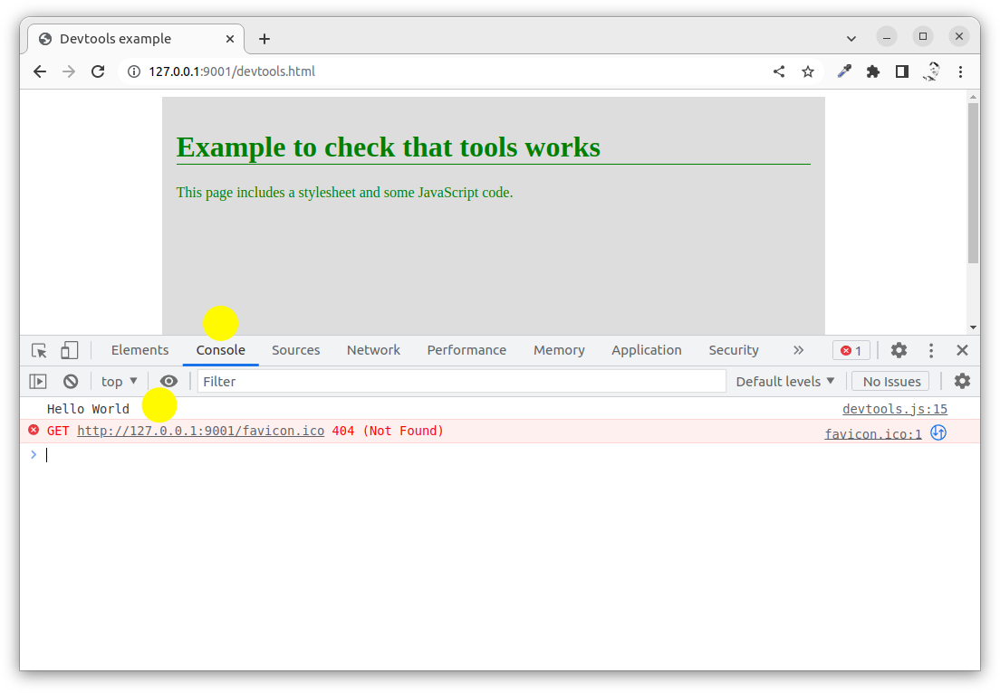
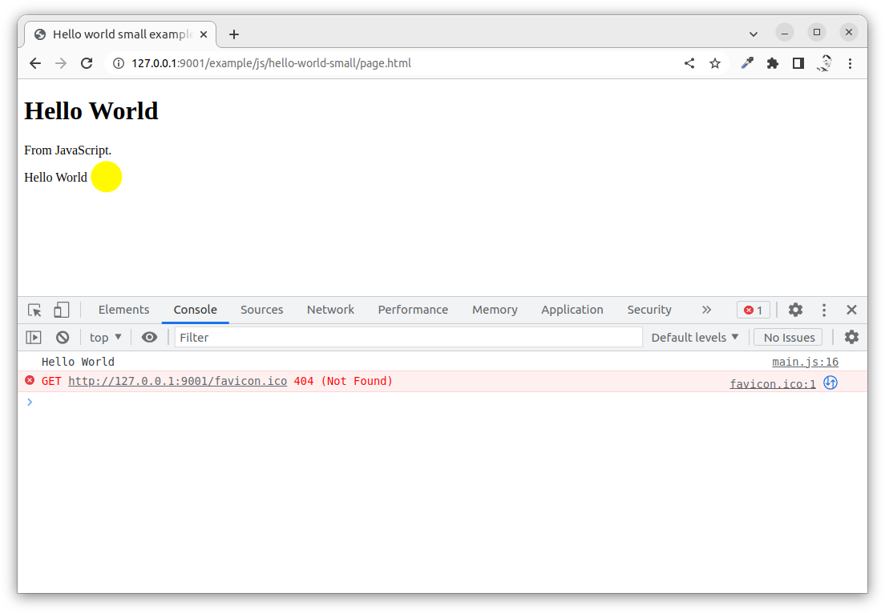
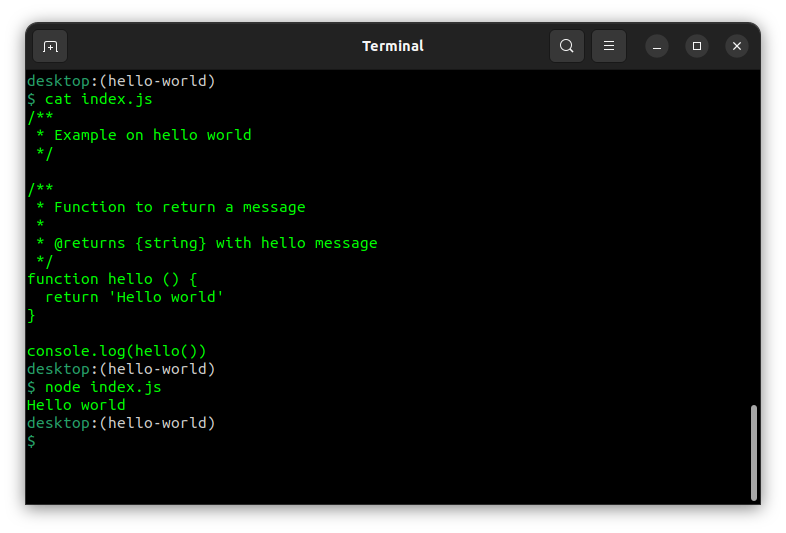

<!doctype html>
<html class="theme-5">
<meta charset="utf-8" />
<link href="../html-slideshow.bundle.min.css" rel="stylesheet" />
<link href="../style.css" rel="stylesheet" />
<script src="https://dbwebb.se/cdn/js/html-slideshow_v1.1.0.bundle.min.js"></script>

<title>JavaScript - Introduction</title>

<script data-role="slide" type="text/html" data-markdown class="titlepage center">
# JavaScript
## Introduction
### Mikael Roos
</script>


<script data-role="slide" type="text/html" data-markdown>
# Agenda

* About, History, Standard
* Client side versus Server side
* Eco system and Frameworks

</script>


<script data-role="slide" type="text/html" data-markdown class="titlepage center">
# JavaScript
## About, History, Standard
</script>


<script data-role="slide" type="text/html" data-markdown>
# About

* JavaScript or JS
* Programming language for the web
* 98% of the websites use JS (as of 2022)
* High-level, just-in-time compiled
* Dynamic typing, prototype-based object-orientation, first-class functions
* Multi-paradigm
    * Event-driven, functional, imperative, (object oriented)

<p class="footnote">https://en.wikipedia.org/wiki/JavaScript</p>

</script>


<script data-role="slide" type="text/html" data-markdown>
# Run-time engines

* Executed in a run-time system (browser or Node.js)
* The run-time system provides API to I/O and libraries
* The run-time system has an engine
* V8 from Google is the most popular engine used in chrome browsers and in Node.js
* The script is embedded in or included from HTML documents
    * Interacting with the DOM

</script>


<script data-role="slide" type="text/html" data-markdown>
# History

* Mosaic first graphical interface browser 1993
* Netscape Navigator followed in 1994
* In 1995 NN decided to add a scripting language into the browser
* First collaborating with Sun to use Java
* NN hired Brendan Eich to embed the Scheme language
* Decision to go ahead with a new language, looking more like Java and less like Scheme
* Named it JavaScript as a "marketing ploy" since Java where the hot thing at this time

</script>


<script data-role="slide" type="text/html" data-markdown>
# History...

* Brendan developed the language and the run-time engine
* Other browser created similair engines - competition time
* Different browsers not so compatible with each other

</script>


<script data-role="slide" type="text/html" data-markdown>
# Standardization

* 2005 standardization work begun by Mozilla joining ECMA International to standardize ECMAScript
* Much work in independant libraries like jQuery
* 2008 V8 JavaScript Engine with JIT compiler for performance
* 2009 "all parties" agreed on ECMAScript 5
* 2009 Node.js for server side
* 2015 reaching maturity with ECMAScript 6

</script>


<script data-role="slide" type="text/html" data-markdown>
# ECMAScript

* 5th edition ECMASript 2009 (agreement)
* 6th edition ECMASript 2015 (maturity)
* 7th edition ECMASript 2016
* ...
* 13th edition ECMASript 2022
* ES.Next

<p class="footnote">https://en.wikipedia.org/wiki/ECMAScript</p>

</script>


<script data-role="slide" type="text/html" data-markdown>
# Transpilers

* Transpile from a higher level language down to another language in source code
* TypeScript is a superset of JavaScript
    * Adds statical typing
    * Transpiles down to JavaScript
* New features transpiled down to JavaScript
* Babel is a popular transpiler

<p class="footnote">
    https://www.typescriptlang.org/<br>
    https://babeljs.io/
</p>

</script>


<script data-role="slide" type="text/html" data-markdown class="titlepage center">
# JavaScript
## Client side
</script>


<script data-role="slide" type="text/html" data-markdown>
# Programming model

* The script is embedded into or imported from the HTML document
* The browser has a JavaScript engine that executes the script
* Script interacts with the DOM
* Script gets events from the browser
* The browser adds API to I/O and functions

<p class="footnote">Docs at MDN<br>https://developer.mozilla.org/en-US/docs/Web/JavaScript/Reference</p>

</script>


<script data-role="slide" data-markdown type="text/html" class="center">
# Include the script
<figure>
    
    <figcaption>Include JavaScript in the HTML document.</figcaption>
</figure>
</script>


<script data-role="slide" type="text/html" data-markdown>
# The script

* This is how a script could look like

```
/**
 * Return a hello message.
 *
 * @returns {string} with hello message
 */
function helloWorld () {
  return 'Hello World'
}

console.log(helloWorld())
```

</script>


<script data-role="slide" data-markdown type="text/html" class="center">
# The console
<figure>
    
    <figcaption>Output from the script into the console of devtools.</figcaption>
</figure>
</script>


<script data-role="slide" type="text/html" data-markdown>
# Interact DOM

* Example on how to interact with the DOM

```
// Update the DOM tree by adding a paragraph
// Get the pointer into the DOM
const paragraphs = document.getElementsByTagName('p')
const element = paragraphs.item(0)

// Create the new element
const newP = document.createElement('p')
newP.innerHTML = helloWorld()

// Insert the new element right after
element.insertAdjacentElement('afterend', newP)
```

</script>


<script data-role="slide" data-markdown type="text/html" class="center">
# The modified DOM
<figure>
    
    <figcaption>Javascript reads and modifies the DOM.</figcaption>
</figure>
</script>


<script data-role="slide" type="text/html" data-markdown>
# Listen events

* Attach a handler to a specific event

```
// Listen to events
document.addEventListener('DOMContentLoaded', (event) => {
    console.log(event)
})
```

<p class="footnote">The event object is output into dev console when all parts of the DOM tree is loaded.</p>

</script>


<script data-role="slide" type="text/html" data-markdown class="titlepage center">
# JavaScript
## Server side
</script>


<script data-role="slide" type="text/html" data-markdown>
# Programming model

* The script is executed from a file
* The browser/DOM does not exists
* The engine is V8
* Adds API to I/O and functions
* Event-driven architecture using asynchronous I/O
* To optimize throughput and scalability (web applications)

</script>


<script data-role="slide" type="text/html" data-markdown>
# Node.js

* Developed by Ryan Dahl 2009
* Nowmore developed and maintained by OpenJS Foundation

<p class="footnote">Docs at https://nodejs.org/en/docs/</p>

</script>


<script data-role="slide" type="text/html" data-markdown>
# Hello World

```
/**
 * Example on hello world
 */

/**
 * Function to return a message
 *
 * @returns {string} with hello message
 */
function hello () {
  return 'Hello world'
}

console.log(hello())
```

</script>


<script data-role="slide" data-markdown type="text/html" class="center">
# Execute it
<figure>
    
    <figcaption>Execute JavaScript using node.js</figcaption>
</figure>
</script>


<script data-role="slide" type="text/html" data-markdown class="titlepage center">
# JavaScript
## Eco system and Frameworks
</script>


<script data-role="slide" type="text/html" data-markdown>
# Eco system

* The packet managers
* npmjs.com
    * A packet registry with libraries and software packages
    * Versioned
* npm - Node Packet Manager
    * A tool to download external packages from npmjs.com
    * Manages dependencies based on versions

</script>


<script data-role="slide" type="text/html" data-markdown>
# Frameworks

* Plain vanilla JavaScript
    * Standard driven as ECMAScript
* Frontend
    * React, Angular, Vue
* Backend
    * Express, Gatsby
* Testing
    * Jest, Mocha

</script>


<script data-role="slide" type="text/html" data-markdown>
# Frameworks...

* Mobile & Desktop
    * Electron, React Native, Cordova
* Build tools
    * Vite, Esbuild, Webpack
* Libraries
    * Loadash, jQuery

</script>


<script data-role="slide" type="text/html" data-markdown>
# The state of JS

* https://2021.stateofjs.com/
* Showing details on the most popular JavaScript techniques, frameworks, tools and libraries

</script>


<script data-role="slide" type="text/html" data-markdown>
# Resources

* MDN JavaScript reference (core, browser)
* Node.js doc (server)
* Learn language basics through MDN or W3Schools

</script>


<script data-role="slide" type="text/html" data-markdown>
# Summary

* JavaScript introduction
* About, History, Standard
* Client side versus Server side
* Eco system and Frameworks

</script>


<script data-role="slide" type="text/html" data-markdown class="titlepage center">
# The end
</script>


<script data-role="slide" type="text/html" data-markdown>
</script>

</html>
